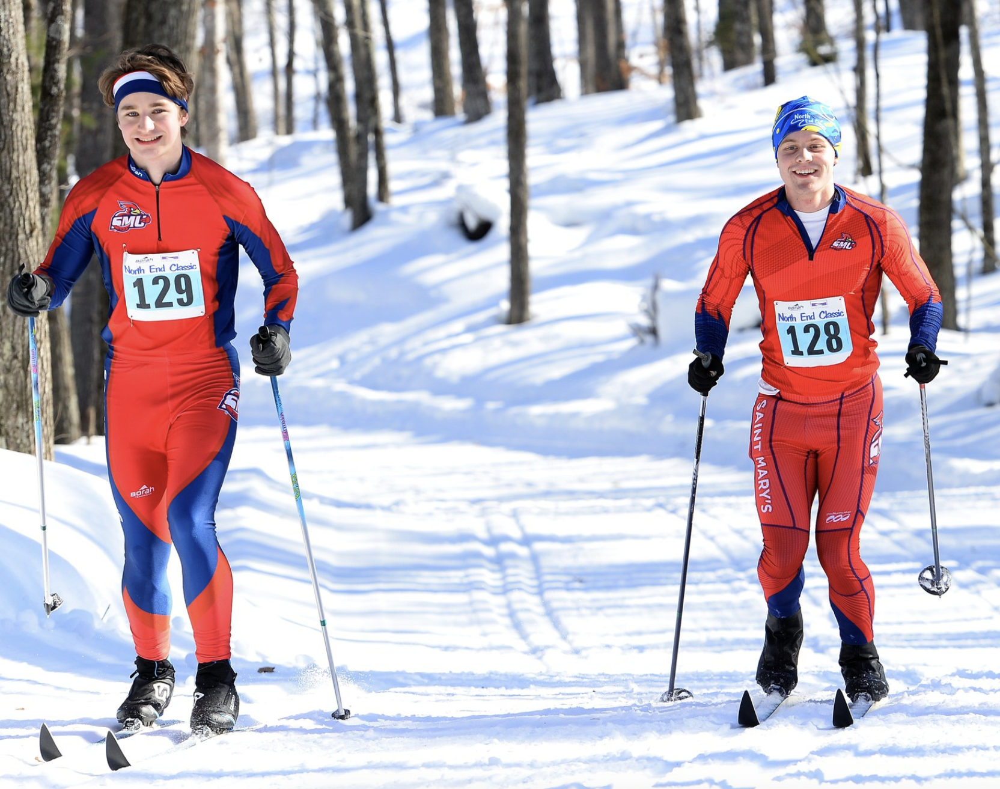

Nordic Ski Team
Home
About

The SMUMN Nordic Ski Club is a group dedicated to the sport of cross-country skiing, emphasizing endurance, technique, and an appreciation for the outdoors. Members enjoy exploring scenic trails, participating in group outings, and engaging in training sessions to refine their skills. Our club often participates in races, practices, and social events, creating a welcoming environment for skiers of all levels, from beginners to competitive athletes. The SMUMN Nordic Ski Club celebrates the beauty of winter landscapes while fostering a strong sense of community among our members.
Why join the club?

- Learn the exciting sport of nordic (cross-country) skiing or continue your development through organized team practice and competition
- Meet other students while fostering a love for the sport through bonding activities and fun night skis on the lighted campus trails
- Help the local community by volunteering for trail maintenance and teaching youth to ski
- Travel to citizen races in the Midwest, e.g.: Junior National Qualifiers (JNQs), CCSA invitationals, and the American Birkebeiner/Kortelopet
Contact Information

Coach: Jaime Mueller - Email: JMUELLER@smumn.edu
President: Bobby Skemp - Email: rcskem22@smumn.edu
Co-President: Lola Schwinghamer - Email: laschw24@smumn.edu
Co-President: Jacob Warden - Email: jaward24@smumn.edu